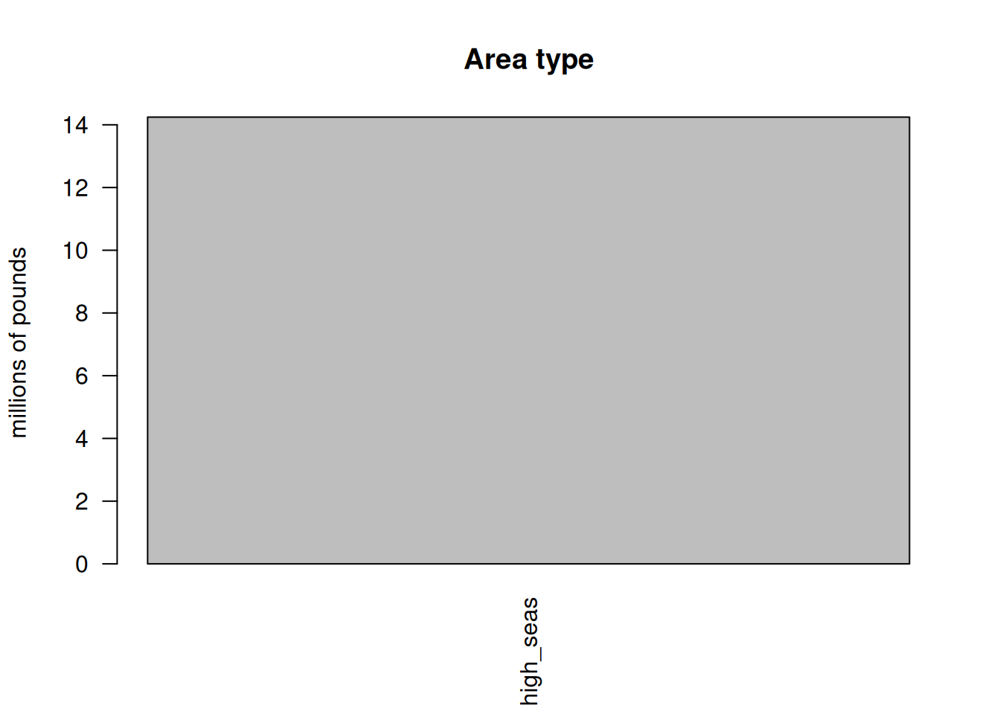
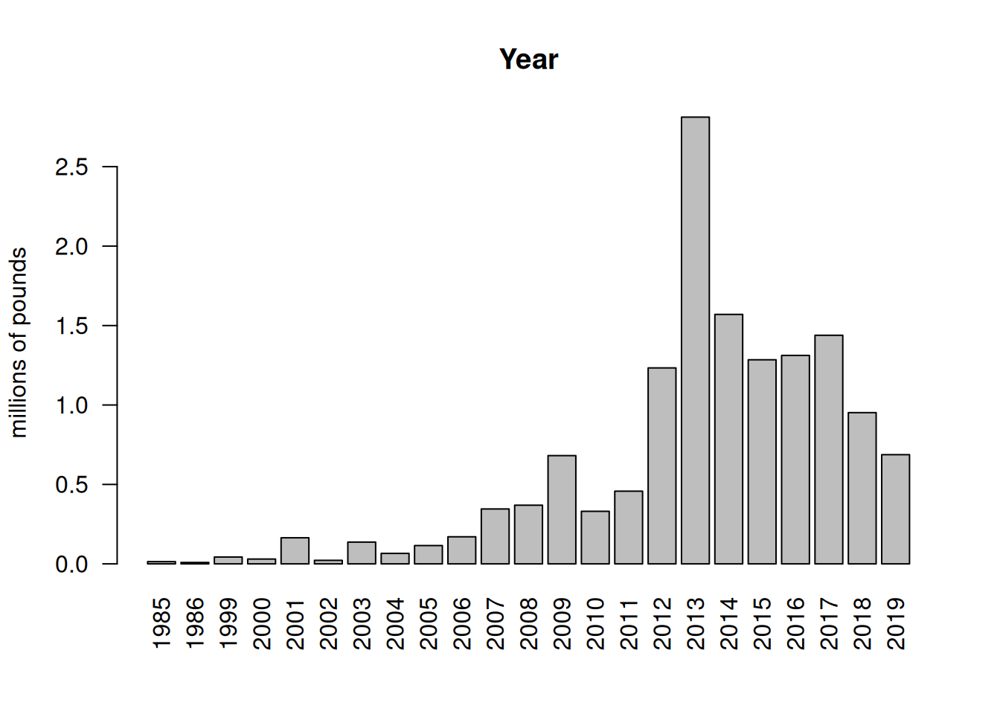
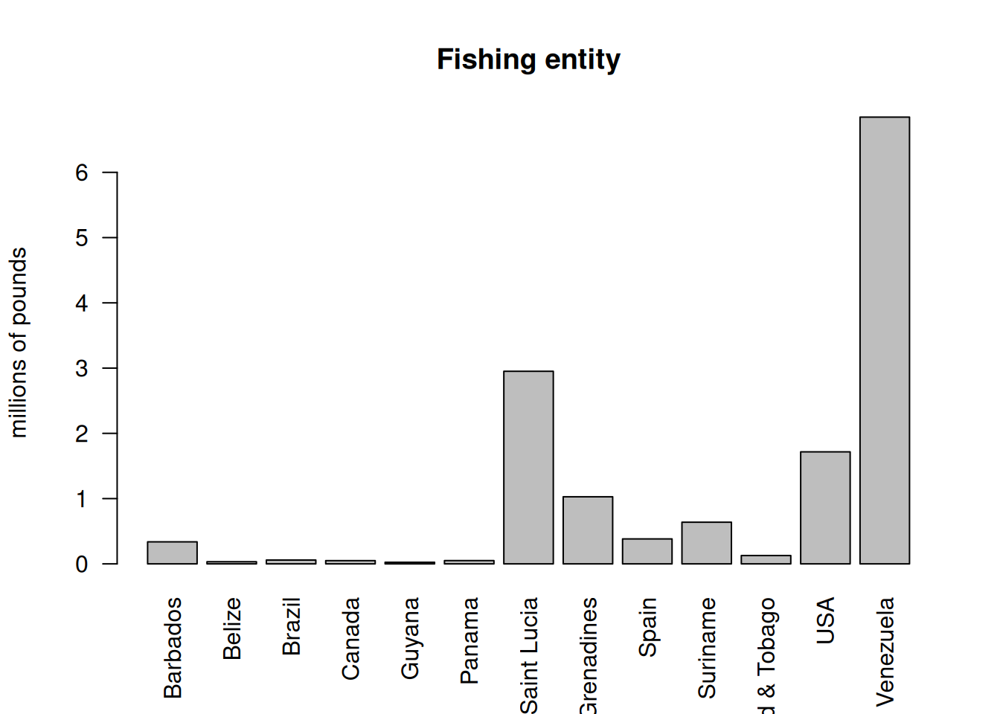
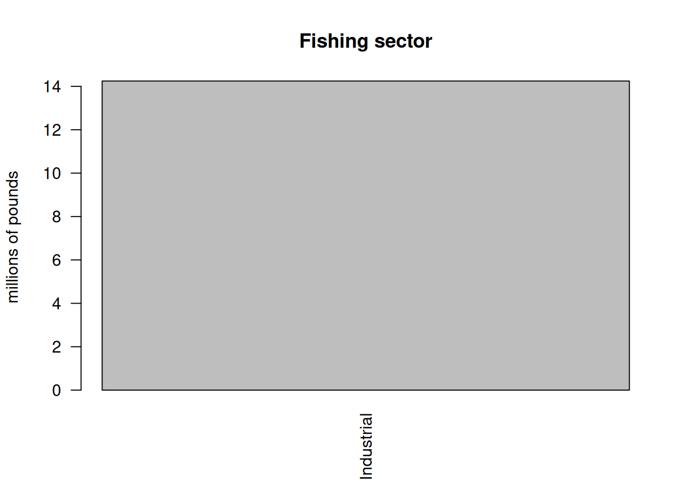
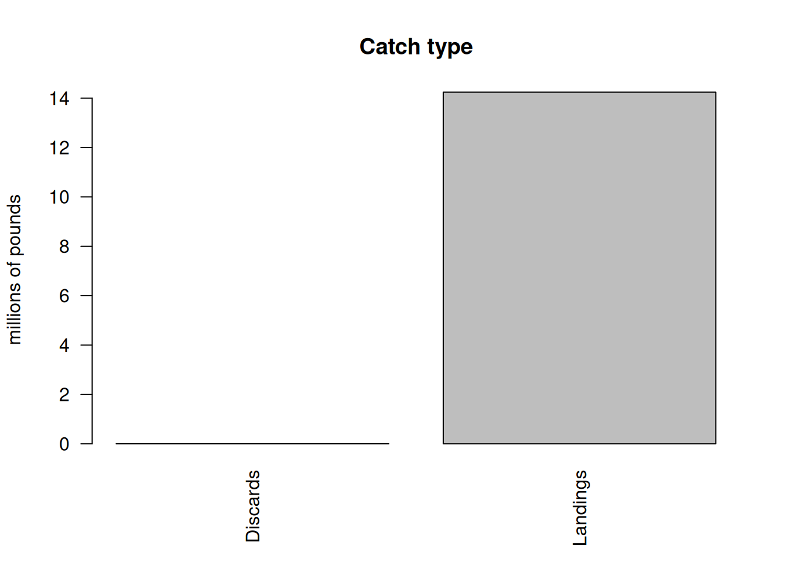
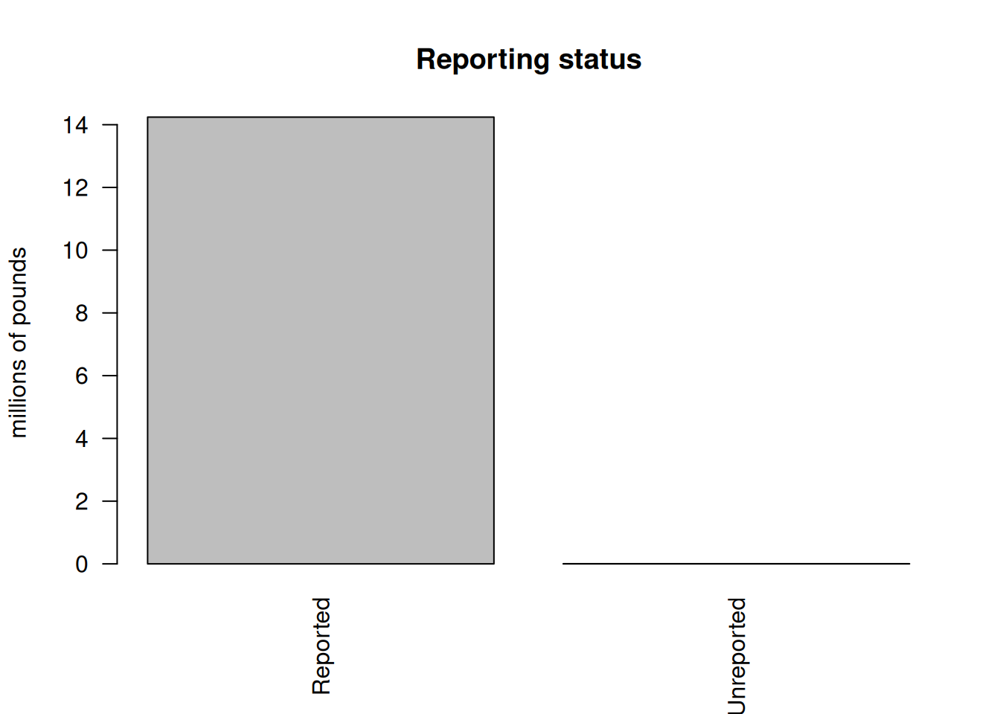
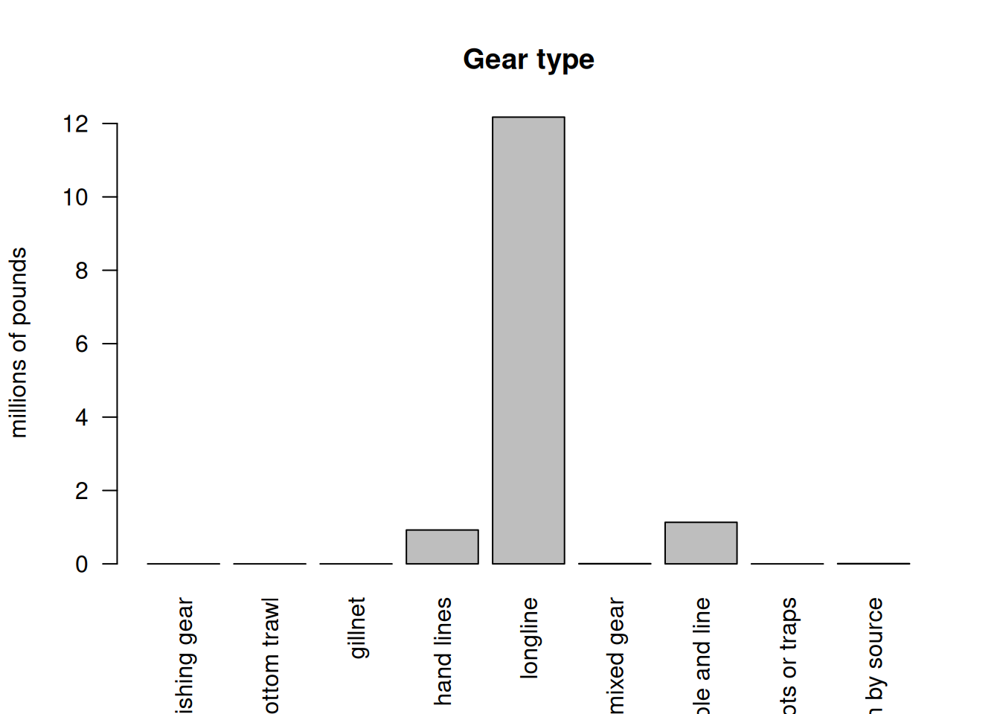
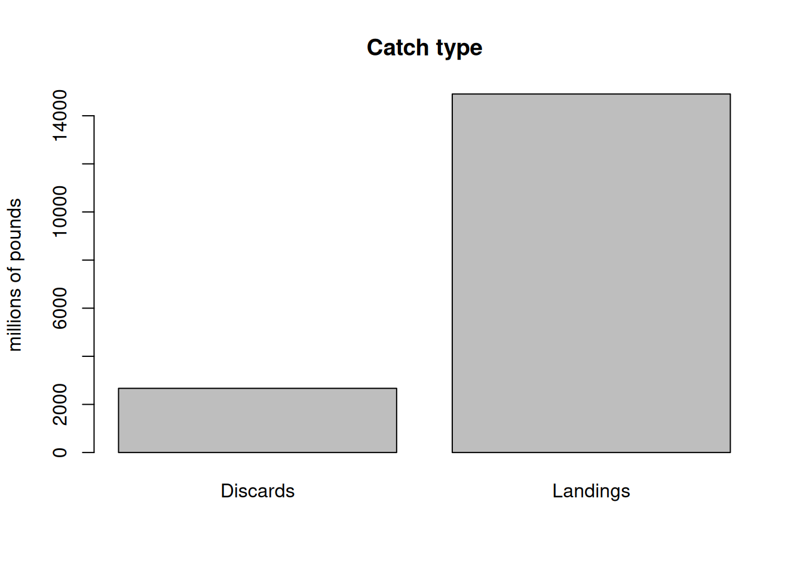
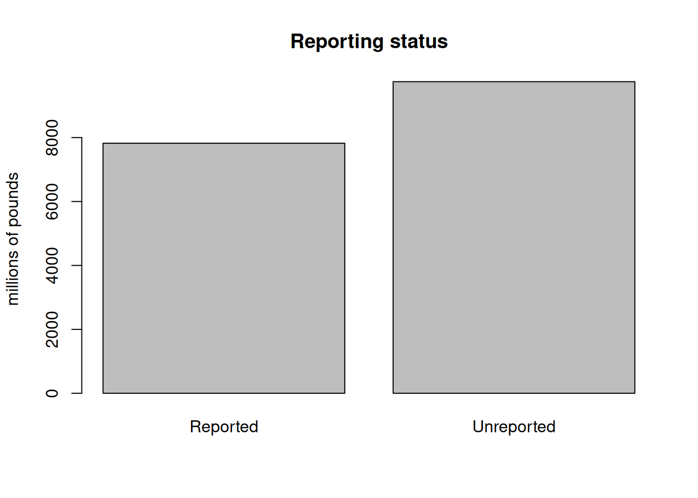
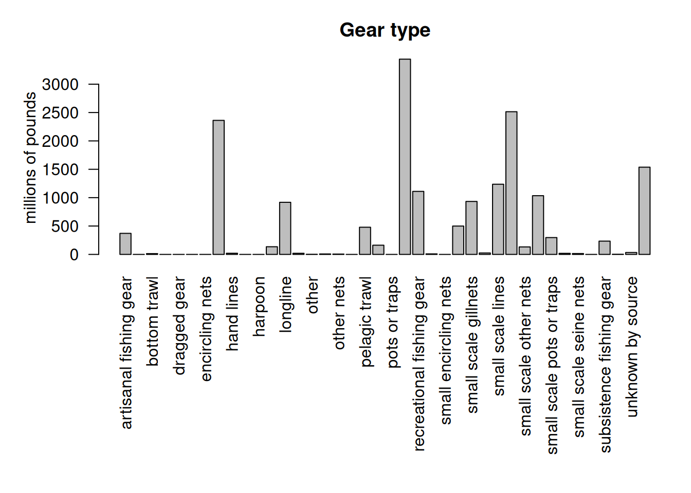

4 Analysis of international landings estimates from Sea Around Us database
Here we will explore commercial and recreational landings data as estimated by the Sea Around Us Project. This data set includes reported data for fisheries worldwide as well as reconstructed estimates for unreported landings. For each country, project scientists assemble available data on landings and use additional sociological and fishing data plus expert information and opinion, to produce their best estimates of total landings from all fishing sectors and for all species globally.
4.1 Data access and upload
For catches within each country’s exclusive economic zones, data are downloaded download data from the Sea Around Us site. In the Biodiversity by Taxon Tools and Data, we filter by EEZ for All regions, and then filter by Taxon at the Species level for Common dolphinfish (Coryphaena hippurus). After clicking “View graphs” one can access the full data set using the “Download Data” button. The high seas data are accessed in the Basic Search High seas section of the site. The individual regions can be clicked on (e.g., Atlantic, Western Central) and then the data are dowloaded using the Download Data button.
The current version of data in use is version 50.1, accessed June 2024. This was still the most recent version of data available as of June 2025.
4.2 Read in the high seas landings
First we read in the high seas landings for the Western Central Atlantic and Northwest Atlantic zones. These are equivalent to FAO areas 21 and 31.
# clear workspacerm(list =ls())install.packages("pals")library(pals)# find data fileshslis <-dir("data/SAU/")[grep("HighSeas", dir("data/SAU/"))]# identify areas 21 and 31print("File names:")
We extract the data for dolphinfish and look at the characteristics of the landings. Most of the landings are in the Western Central Atlantic, and the primary fishing entities are Venezuela and Saint Lucia. The fishing sector is all industrial, and the vast majority of the catch is reported landings, with only a tiny fraction of discards or unreported landings listed in the database. The gear type is primarily long line.
# check species name and filter out dolphinfishunique(hs$common_name)[grep("dolphin", unique(hs$common_name))]
[1] "Common dolphinfish"
hs <- hs[which(hs$common_name =="Common dolphinfish"), ]# look at the categories within each column of dataapply(hs[1:13], 2, table)
$area_name
Atlantic, Northwest Atlantic, Western Central
113 160
$area_type
high_seas
273
$year
1985 1986 1999 2000 2001 2002 2003 2004 2005 2006 2007 2008 2009 2010 2011 2012
1 1 1 1 1 1 1 6 4 1 5 10 5 8 10 12
2013 2014 2015 2016 2017 2018 2019
24 22 30 33 33 29 34
$scientific_name
Coryphaena hippurus
273
$common_name
Common dolphinfish
273
$functional_group
Large pelagics (>=90 cm)
273
$commercial_group
Perch-likes
273
$fishing_entity
Barbados Belize
6 3
Brazil Canada
19 18
Guyana Panama
1 1
Saint Lucia Saint Vincent & the Grenadines
5 28
Spain Suriname
80 1
Trinidad & Tobago USA
14 74
Venezuela
23
$fishing_sector
Industrial
273
$catch_type
Discards Landings
5 268
$reporting_status
Reported Unreported
253 20
$gear_type
artisanal fishing gear bottom trawl gillnet
7 9 11
hand lines longline mixed gear
17 187 1
pole and line pots or traps unknown by source
19 9 13
$end_use_type
Direct human consumption Fishmeal and fish oil
5 194 37
Other
37
# convert from metric tonnes to poundshs$pounds <- hs$tonnes *1000*2.20462# produce barplot of key data fields#par(mar = c(10, 5, 3, 1), mfrow = c(4, 2))barplot(tapply(hs$pounds/10^6, hs$area_name, sum, na.rm = T), las =2, ylab ="millions of pounds", main ="Area name")
barplot(tapply(hs$pounds/10^6, hs$area_type, sum, na.rm = T), las =2, ylab ="millions of pounds", main ="Area type")

barplot(tapply(hs$pounds/10^6, hs$year, sum, na.rm = T), las =2, ylab ="millions of pounds", main ="Year")

barplot(tapply(hs$pounds/10^6, hs$fishing_entity, sum, na.rm = T), las =2, ylab ="millions of pounds", main ="Fishing entity")

barplot(tapply(hs$pounds/10^6, hs$fishing_sector, sum, na.rm = T), las =2, ylab ="millions of pounds", main ="Fishing sector")

barplot(tapply(hs$pounds/10^6, hs$catch_type, sum, na.rm = T), las =2, ylab ="millions of pounds", main ="Catch type")

barplot(tapply(hs$pounds/10^6, hs$reporting_status, sum, na.rm = T), las =2, ylab ="millions of pounds", main ="Reporting status")

barplot(tapply(hs$pounds/10^6, hs$gear_type, sum, na.rm = T), las =2, ylab ="millions of pounds", main ="Gear type")

4.3 Summarize the high seas landings
We plot the annual catches by fishing entity to look at trends over time.
par(mar =c(5, 5, 1, 1), mfrow =c(1, 1))tab <-tapply(hs$pounds, list(hs$year, hs$fishing_entity), sum, na.rm = T)matplot(as.numeric(rownames(tab)), tab/10^6, type ="l", col =glasbey(ncol(tab)), lty =1, lwd =2, xlab ="year", ylab ="total catch (millions of pounds)", main ="High seas Western Central Atlantic dolphin catch")legend("topleft", colnames(tab), col =glasbey(ncol(tab)), lty =1, lwd =2, cex =0.8, bty ="n")
Finally we output the subset of high seas dolphin catch for the two areas. Because we have already accounted for the USA landings in our national reporting and are aiming to only summarize international landings here, we filter out the USA landings from the Sea Around Us database.
# write summary to merge with EEZ data write.csv(tab, file ="data/SAU/high_seas_by_year.csv")
4.4 Read in the landings within excluzive economic zones (EEZs)
Now we read in the landings reported by each country or jurisdiction’s respective EEZ. Because we have extracted dolphin landings for EEZs worldwide, we need to separate out the landings for the Atlantic Ocean basin.
rm(list =ls())d <-read.csv("data/SAU/SAU Taxa 600006 v50-1.csv", header = T, sep =",") # v. 50.1 - June 2024head(d)
area_name area_type year scientific_name common_name
1 Australia eez 1950 Coryphaena hippurus Common dolphinfish
2 Australia eez 1950 Coryphaena hippurus Common dolphinfish
3 Australia eez 1950 Coryphaena hippurus Common dolphinfish
4 Bahamas eez 1950 Coryphaena hippurus Common dolphinfish
5 Barbados eez 1950 Coryphaena hippurus Common dolphinfish
6 Bermuda (UK) eez 1950 Coryphaena hippurus Common dolphinfish
functional_group commercial_group fishing_entity fishing_sector
1 Large pelagics (>=90 cm) Perch-likes Australia Industrial
2 Large pelagics (>=90 cm) Perch-likes Australia Industrial
3 Large pelagics (>=90 cm) Perch-likes Australia Industrial
4 Large pelagics (>=90 cm) Perch-likes Bahamas Recreational
5 Large pelagics (>=90 cm) Perch-likes Barbados Recreational
6 Large pelagics (>=90 cm) Perch-likes Bermuda (UK) Artisanal
catch_type reporting_status gear_type
1 Landings Reported longline
2 Landings Reported longline
3 Landings Reported longline
4 Landings Unreported recreational fishing gear
5 Landings Unreported recreational fishing gear
6 Landings Reported small scale lines
end_use_type tonnes landed_value
1 Fishmeal and fish oil 0.003373202 3.438170e-05
2 Direct human consumption 6.739657104 1.040254e+04
3 Other 0.003373202 3.438170e-05
4 Direct human consumption 48.665105143 8.262728e+00
5 Direct human consumption 0.009158559 4.846886e-04
6 Direct human consumption 1.511085514 3.199403e+03
#dim(d)apply(d[1:13], 2, table)
$area_name
Albania
1
Algeria
70
All
312
American Samoa
262
Andaman & Nicobar Isl. (India)
883
Angola
78
Anguilla (UK)
5
Antigua & Barbuda
6
Aruba (Netherlands)
470
Ascension Isl. (UK)
1
Australia
786
Azores Isl. (Portugal)
303
Bahamas
135
Balearic Islands (Spain)
2147
Bangladesh
5
Barbados
87
Belize
11
Benin
121
Bermuda (UK)
136
Bonaire (Netherlands)
137
Brazil (mainland)
1286
British Virgin Isl. (UK)
4
Brunei Darussalam
84
Cambodia
5
Cameroon
10
Canada (East Coast)
135
Canary Isl. (Spain)
290
Cape Verde
702
Cayman Isl. (UK)
277
Chagos Archipelago (UK)
6
China
2494
Christmas Isl. (Australia)
90
Clipperton Isl. (France)
225
Colombia (Caribbean)
152
Colombia (Pacific)
171
Comoros Isl.
83
Congo (ex-Zaire)
5
Congo, R. of
13
Cook Islands
368
Corsica (France)
21
Costa Rica (Caribbean)
38
Costa Rica (Pacific)
180
Côte d'Ivoire
157
Crete (Greece)
6
Croatia
9
Cuba
2
Curaçao (Netherlands)
142
Cyprus (South)
38
Desventuradas Isl. (Chile)
1
Dominica
297
Dominican Republic
298
Easter Isl. (Chile)
96
Ecuador (mainland)
142
El Salvador
83
Equatorial Guinea
297
Fernando de Noronha (Brazil)
446
Fiji
386
France (Atlantic Coast)
216
France (Mediterranean)
57
French Guiana
42
French Polynesia
332
Gabon
158
Galapagos Isl. (Ecuador)
237
Gambia
125
Ghana
105
Glorieuse Islands (France)
6
Greece (without Crete)
17
Grenada
373
Guadeloupe (France)
132
Guam (USA)
91
Guatemala (Caribbean)
1
Guatemala (Pacific)
390
Guinea
166
Guinea-Bissau
146
Guyana
55
Haiti
316
Hawaii Main Islands (USA)
665
Hawaii Northwest Islands (USA)
523
Honduras (Caribbean)
373
Honduras (Pacific)
21
Hong Kong (China)
288
Howland & Baker Isl. (USA)
172
India (mainland)
33
Indonesia (Central)
154
Indonesia (Eastern)
431
Indonesia (Indian Ocean)
169
Iran (Sea of Oman)
283
Italy (mainland)
1662
Jamaica
135
Japan (Daito Islands)
337
Japan (main islands)
386
Japan (Ogasawara Islands)
334
Jarvis Isl. (USA)
107
Johnston Atoll (USA)
171
Kenya
68
Kermadec Isl. (New Zealand)
187
Kiribati (Gilbert Islands)
519
Kiribati (Line Islands)
505
Kiribati (Phoenix Islands)
526
Korea (North, Sea of Japan)
162
Korea (North, Yellow Sea)
162
Korea (South)
347
Lebanon
12
Liberia
183
Libya
818
Lord Howe Isl. (Australia)
63
Madagascar
199
Madeira Isl. (Portugal)
135
Malaysia (Peninsula East)
7
Malaysia (Peninsula West)
49
Malaysia (Sabah)
71
Malaysia (Sarawak)
65
Maldives
22
Malta
1946
Marshall Isl.
504
Martinique (France)
123
Mauritania
183
Mauritius
236
Mayotte (France)
365
Mexico (Atlantic)
319
Mexico (Pacific)
759
Micronesia (Federated States of)
572
Montserrat (UK)
250
Morocco (Central)
147
Morocco (Mediterranean)
108
Morocco (South)
159
Mozambique
75
Mozambique Channel Isl. (France)
32
Myanmar
48
Namibia
27
Nauru
367
New Caledonia (France)
170
New Zealand
1276
Nicaragua (Caribbean)
3
Nicaragua (Pacific)
126
Nigeria
31
Niue (New Zealand)
310
Norfolk Isl. (Australia)
56
Northern Marianas (USA)
446
Oman
14
Pakistan
1898
Palau
427
Palmyra Atoll & Kingman Reef (USA)
101
Panama (Caribbean)
34
Panama (Pacific)
179
Papua New Guinea
615
Peru
1312
Philippines
1124
Pitcairn (UK)
181
Portugal (mainland)
80
Puerto Rico (USA)
359
Réunion (France)
106
Saba and Sint Eustatius (Netherlands)
84
Saint Helena (UK)
22
Saint Kitts & Nevis
324
Saint Lucia
379
Saint Pierre & Miquelon (France)
3
Saint Vincent & the Grenadines
466
Samoa
456
Sao Tome & Principe
472
Sardinia (Italy)
1634
Senegal
218
Seychelles
205
Sicily (Italy)
1657
Sierra Leone
158
Singapore
22
Sint Maarten (Netherlands)
106
Solomon Isl.
515
Somalia
12
South Africa (Atlantic and Cape)
216
South Africa (Indian Ocean Coast)
298
Spain (mainland, Med and Gulf of Cadiz)
860
Spain (Northwest)
142
Sri Lanka
18
St Barthelemy (France)
429
St Martin (France)
429
St Paul & Amsterdam Isl. (France)
3
St Paul and St. Peter Archipelago (Brazil)
250
Suriname
53
Syria
329
Taiwan
1379
Tanzania
58
Thailand (Andaman Sea)
41
Thailand (Gulf of Thailand)
41
Timor Leste
46
Togo
247
Tokelau (New Zealand)
445
Tonga
360
Trindade & Martim Vaz Isl. (Brazil)
64
Trinidad & Tobago
161
Tristan da Cunha Isl. (UK)
1
Tromelin Isl. (France)
15
Tunisia
649
Turks & Caicos Isl. (UK)
225
Tuvalu
452
Uruguay
3
US Virgin Isl.
142
USA (East Coast)
2668
USA (Gulf of Mexico)
1374
USA (West Coast)
365
Vanuatu
384
Venezuela
120
Viet Nam
335
Wake Isl. (USA)
261
Wallis & Futuna Isl. (France)
398
Yemen (Socotra)
2
$area_type
eez high_seas
63056 312
$year
1950 1951 1952 1953 1954 1955 1956 1957 1958 1959 1960 1961 1962 1963 1964 1965
436 453 477 472 500 507 508 514 514 543 543 545 530 532 600 635
1966 1967 1968 1969 1970 1971 1972 1973 1974 1975 1976 1977 1978 1979 1980 1981
670 666 671 698 719 760 743 738 799 775 791 691 717 692 694 703
1982 1983 1984 1985 1986 1987 1988 1989 1990 1991 1992 1993 1994 1995 1996 1997
736 688 684 746 739 791 811 827 864 930 927 907 917 940 911 952
1998 1999 2000 2001 2002 2003 2004 2005 2006 2007 2008 2009 2010 2011 2012 2013
972 1002 1015 1053 1214 1225 1290 1250 1245 1318 1300 1269 1372 1457 1401 1584
2014 2015 2016 2017 2018 2019
1687 1647 1680 1703 1715 1763
$scientific_name
Coryphaena hippurus
63368
$common_name
Common dolphinfish
63368
$functional_group
Large pelagics (>=90 cm)
63368
$commercial_group
Perch-likes
63368
$fishing_entity
Algeria American Samoa
40 157
Aruba (Netherlands) Australia
45 455
Azores Isl. (Portugal) Bahamas
212 70
Barbados Belize
76 14
Benin Bermuda (UK)
72 134
Bonaire (Netherlands) Brazil
70 2054
Canada Cape Verde
132 624
Cayman Isl. (UK) Channel Isl. (UK)
356 1
Chile China
18 2500
Christmas Isl. (Australia) Colombia
28 24
Comoros Costa Rica
36 64
Côte d'Ivoire Cuba
11 255
Curacao Dominica
71 330
Dominican Republic Ecuador
293 114
Equatorial Guinea Fiji
260 336
France French Polynesia
776 137
Ghana Grenada
46 462
Guadeloupe (France) Guam (USA)
129 33
Guatemala Guyana
313 3
Haiti Honduras
237 287
India Indonesia
875 255
Iran Italy
280 4883
Jamaica Japan
123 3322
Kenya Korea (South)
55 2308
Lebanon Liberia
12 41
Libya Madagascar
720 71
Madeira Isl. (Portugal) Maldives
90 7
Malta Marshall Isl.
2190 303
Martinique (France) Mauritania
355 64
Mauritius Mayotte (France)
104 366
Mexico Montserrat (UK)
1016 243
Morocco Mozambique
75 11
New Zealand Nicaragua
424 52
Niue (New Zealand) North Marianas (USA)
154 155
Oman Pakistan
14 1876
Palau Panama
16 120
Papua New Guinea Peru
390 1100
Philippines Portugal
934 658
Puerto Rico (USA) Réunion (France)
309 176
Saba and Saint Eustaius (Netherlands) Saint Helena (UK)
70 22
Saint Kitts & Nevis Saint Lucia
321 234
Saint Vincent & the Grenadines Samoa
306 157
Sao Tome & Principe Senegal
342 107
Seychelles Sint Maarten
136 70
Solomon Isl. South Africa
114 453
South Cyprus Spain
38 5112
Sri Lanka St Barthelemy (France)
26 418
St Martin Suriname
418 11
Syrian Arab Republic Taiwan
329 6240
Tanzania Thailand
68 30
Togo Tokelau (New Zealand)
129 157
Tonga Trinidad & Tobago
115 103
Tunisia Turks & Caicos Isl. (UK)
551 223
Ukraine United Kingdom
162 10
Unknown Fishing Country US Virgin Isl.
3364 133
USA Vanuatu
6780 486
Venezuela Viet Nam
470 75
Wallis & Futuna Isl. (France)
166
$fishing_sector
Artisanal Industrial Recreational Subsistence
25616 33126 2637 1989
$catch_type
Discards Landings
17484 45884
$reporting_status
Reported Unreported
25295 38073
$gear_type
artisanal fishing gear bagnets
1807 28
bottom trawl cast nets
2101 28
dragged gear dredge
12 45
encircling nets gillnet
12 1083
hand lines hand or tools
1172 117
harpoon lines
57 1984
longline mixed gear
13940 500
other other industrial
208 335
other nets otter trawl
122 6
pelagic trawl pole and line
397 577
pots or traps purse seine
269 9699
recreational fishing gear shrimp trawl
2358 205
small encircling nets small scale encircling nets
15 2517
small scale gillnets small scale hand lines
4701 669
small scale lines small scale longline
7027 551
small scale other nets small scale pole lines
531 453
small scale pots or traps small scale purse seine
2441 261
small scale seine nets small scale trammel net
1338 41
subsistence fishing gear unknown by author
1831 97
unknown by source unknown class
312 3521
$end_use_type
Direct human consumption Fishmeal and fish oil
17484 25810 8652
Other
11422
# convert tonnes to pounds d$lbs <- d$tonnes *1000*2.20462
We look at the characteristics of the landings within EEZx. These are largely industrial and artisanal in nature. Landings are the majority of the catch but discards are also present. There are more unreported landings than reported landings and a variety of gear types are used.
# look at characteristics of data #par(mfrow = c(2, 2), mar = c(5, 5, 3, 1))barplot(tapply(d$lbs, d$fishing_sector, sum, na.rm = T)/10^6, ylab ="millions of pounds", main ="Fishing sector")
barplot(tapply(d$lbs, d$catch_type, sum, na.rm = T)/10^6, ylab ="millions of pounds", main ="Catch type")

barplot(tapply(d$lbs, d$reporting_status, sum, na.rm = T)/10^6, ylab ="millions of pounds", main ="Reporting status")

par(mar=c(12, 5, 3, 1))barplot(tapply(d$lbs, d$gear_type, sum, na.rm = T)/10^6, las =2, ylab ="millions of pounds", main ="Gear type")

4.5 Separating the EEZs by area
Now we have to manually assign the different EEZs to respective areas. We separate the geographical areas within the Atlantic Ocean (North and South) and lump all other EEZs into “other oceans.” This latter category is largely the Pacific Ocean and to a lesser extent the Indian Ocean. We remove the high seas catch from this database as it is not ocean-specific and we have extracted the ocean-specific high seas catch previously.
# remove the high seas catch from this databased <- d[which(d$area_type !="high_seas"), ] d$fishing_entity <-as.factor(d$fishing_entity)d$fishing_entity <-droplevels(d$fishing_entity)table(d$area_type)
eez
63056
# Western Central Atlantic EEZsWCA <-c("Bahamas", "Barbados", "Cayman Isl. (UK)", "Dominica", "Dominican Republic", "Grenada", "Aruba (Netherlands)", "Haiti", "Guadeloupe (France)", "Jamaica", "Martinique (France)","Montserrat (UK)", "Nicaragua (Caribbean)", "Puerto Rico (USA)", "Saint Kitts & Nevis", "Saint Lucia", "Saint Vincent & the Grenadines", "Trinidad & Tobago", "US Virgin Isl.", "St Barthelemy (France)", "St Martin (France)", "Curaçao (Netherlands)", "Bonaire (Netherlands)","Saba and Sint Eustatius (Netherlands)", "Sint Maarten (Netherlands)", "Honduras (Caribbean)","Colombia (Caribbean)", "Mexico (Atlantic)", "Turks & Caicos Isl. (UK)", "Guyana", "Venezuela","Antigua & Barbuda", "Belize", "British Virgin Isl. (UK)", "French Guiana", "Cuba", "Anguilla (UK)", "Suriname", "Costa Rica (Caribbean)", "Guatemala (Caribbean)", "Panama (Caribbean)", "Bermuda (UK)", "Curaçao (Netherlands)") # BrazilBra <-c("Brazil (mainland)", "Fernando de Noronha (Brazil)", "St Paul and St. Peter Archipelago (Brazil)")# CanadaCan <-c("Canada (East Coast)", "Saint Pierre & Miquelon (France)")# United StatesUSA <-c("USA (East Coast)", "USA (Gulf of Mexico)")# Northeast Atlantic EEZsNEA <-c("Canary Isl. (Spain)", "Spain (mainland; Med and Gulf of Cadiz)", "Spain (Northwest)", "Spain (mainland, Med and Gulf of Cadiz)", "France (Atlantic Coast)", "Portugal (mainland)", "Azores Isl. (Portugal)")# Eastern Central Atlantic EEZsECA <-c("Madeira Isl. (Portugal)", "Cape Verde", "Equatorial Guinea", "Benin", "Sao Tome & Principe ", "Sao Tome & Principe", "Morocco (Central)", "Ghana", "Côte d'Ivoire", "Côte d'Ivoire", "Guinea", "Liberia", "Sierra Leone", "Nigeria", "Togo", "Guinea-Bissau", "Senegal", "Cameroon", "Gambia", "Mauritania", "Morocco (South)", "Gabon", "Congo; R. of", "Congo, R. of", "Congo (ex-Zaire)")# Southeastern Atlantic EEZsSEA <-c("Angola", "Namibia", "South Africa (Atlantic and Cape)", "Ascension Isl. (UK)", "Saint Helena (UK)", "Tristan da Cunha Isl. (UK)")# Southwest Atlantic EEZsSWA <-c("Trindade & Martim Vaz Isl. (Brazil)", "Uruguay")# Mediterranean EEZsMed <-c("Italy (mainland)", "Libya", "Malta", "Syria", "Sicily (Italy)","Sardinia (Italy)", "Balearic Islands (Spain)", "Cyprus (North)", "Cyprus (South)", "Gaza Strip", "Greece (without Crete)", "Crete (Greece)", "Lebanon", "Turkey (Mediterranean Sea)", "Egypt (Mediterranean)", "Israel (Mediterranean)", "Tunisia", "Algeria", "Albania", "Croatia", "Montenegro", "Morocco (Mediterranean)", "France (Mediterranean)", "Corsica (France)")# add variable to specify regiond$reg <-"other oceans"d$reg[which(d$area_name %in% WCA)] <-"Western Central EEZs"d$reg[which(d$area_name %in% Bra)] <-"Brazil EEZ"d$reg[which(d$area_name %in% Can)] <-"Canadian EEZ"d$reg[which(d$area_name %in% USA)] <-"United States EEZ"d$reg[which(d$area_name %in% NEA)] <-"Northeast EEZs"d$reg[which(d$area_name %in% ECA)] <-"Eastern Central EEZs"d$reg[which(d$area_name %in% SEA)] <-"Southeast EEZs"d$reg[which(d$area_name %in% SWA)] <-"Southwest EEZs"d$reg[which(d$area_name %in% Med)] <-"Mediterranean Sea EEZs"
Now we will check that we have classified the regions correctly.
# check region designation othlis <-unique(d$area_name[which(d$reg =="other oceans")])print("EEZs of all other oceans: ")
Brazil EEZ Canadian EEZ Eastern Central EEZs Mediterranean Sea EEZs
1950 1127242 NA 677552.5 26162262
1951 1060734 NA 693004.4 25410830
1952 1128992 NA 708466.7 30206350
1953 1111008 NA 723939.4 31275619
1954 1090492 NA 739422.5 31383840
1955 1190424 NA 754915.9 30056210
Northeast EEZs other oceans Southeast EEZs Southwest EEZs
1950 1173441 19331387 NA NA
1951 1187386 21573930 NA NA
1952 1193045 22569230 NA NA
1953 1141504 25904815 NA NA
1954 1269523 32505789 NA NA
1955 1405543 34571430 NA NA
United States EEZ Western Central EEZs
1950 1548245 1345027
1951 1721403 1467925
1952 1871779 1510406
1953 2024535 2001465
1954 2177865 2069754
1955 2309815 2130341
other oceans Mediterranean Sea EEZs United States EEZ Brazil EEZ
1950 19331387 26162262 1548245 1127242
1951 21573930 25410830 1721403 1060734
1952 22569230 30206350 1871779 1128992
1953 25904815 31275619 2024535 1111008
1954 32505789 31383840 2177865 1090492
1955 34571430 30056210 2309815 1190424
Western Central EEZs Northeast EEZs Eastern Central EEZs Southwest EEZs
1950 1345027 1173441 677552.5 NA
1951 1467925 1187386 693004.4 NA
1952 1510406 1193045 708466.7 NA
1953 2001465 1141504 723939.4 NA
1954 2069754 1269523 739422.5 NA
1955 2130341 1405543 754915.9 NA
Southeast EEZs Canadian EEZ
1950 NA NA
1951 NA NA
1952 NA NA
1953 NA NA
1954 NA NA
1955 NA NA
yrs <-as.numeric(rownames(tab))par(mar =c(5, 4, 4, 3), mgp =c(3, 1, 0))matplot(yrs, tab_glob/10^6, las =2, type ="l", lty =c(3, rep(1, 9)), lwd =3, col =glasbey(ncol(tab_glob)), xlab ="", ylab ="total catch (millions of pounds)", main ="Global dolphin catches within EEZs (commercial + recreational)")legend("topleft", colnames(tab_glob), col =glasbey(ncol(tab_glob)), lty =c(3, rep(1, 9)), lwd =3, bty ="n")
We can see that the EEZ catches globally are dominated by areas outside of the Atlantic (“other oceans”) so we will replot the data after moving this category. Here we can see that most of the catches historically were coming from the Mediterranean Sea, though these catches have been declining drastially since the 1970s. Catches in the United States have showed an opposite pattern, with low historical catches that increased in the 1980s (largely due to the introduction of recreational monitoring). Catches in the Western Central EEZs have increased gradually over time.
# remove other oceanshead(tab_glob)
other oceans Mediterranean Sea EEZs United States EEZ Brazil EEZ
1950 19331387 26162262 1548245 1127242
1951 21573930 25410830 1721403 1060734
1952 22569230 30206350 1871779 1128992
1953 25904815 31275619 2024535 1111008
1954 32505789 31383840 2177865 1090492
1955 34571430 30056210 2309815 1190424
Western Central EEZs Northeast EEZs Eastern Central EEZs Southwest EEZs
1950 1345027 1173441 677552.5 NA
1951 1467925 1187386 693004.4 NA
1952 1510406 1193045 708466.7 NA
1953 2001465 1141504 723939.4 NA
1954 2069754 1269523 739422.5 NA
1955 2130341 1405543 754915.9 NA
Southeast EEZs Canadian EEZ
1950 NA NA
1951 NA NA
1952 NA NA
1953 NA NA
1954 NA NA
1955 NA NA
tab <- tab_glob[, -which(colnames(tab_glob) =="other oceans")]#head(tab)matplot(yrs, tab/10^6, las =2, type ="b", pch =19, cex =0.5, lty =1, col =glasbey(ncol(tab)), xlab ="", ylab ="total catch (millions of pounds)", axes = F,main ="Dolphin catches from the Atlantic EEZs (commercial + recreational)")matplot(yrs, tab/10^6, las =2, type ="l", pch =19, lty =1, lwd =2, add = T, col =glasbey(ncol(tab)))axis(1, at = yrs[seq(1, 90, 2)], las =2); axis(2); box()legend(1952, 22, colnames(tab), col =glasbey(ncol(tab)), pch =19, lty =1, lwd =2, bty ="n")
4.7 Merge high seas with catch with exclusive economic zones
Now we will merge in the high seas catch from the steps above into the EEZ catches to get a better picture of total catch in FAO zones 31 and 21.
hs <-read.csv("data/SAU/high_seas_by_year.csv")names(hs)[1] <-"year"# check that columns matchhead(tab)
Mediterranean Sea EEZs United States EEZ Brazil EEZ Western Central EEZs
1950 26162262 1548245 1127242 1345027
1951 25410830 1721403 1060734 1467925
1952 30206350 1871779 1128992 1510406
1953 31275619 2024535 1111008 2001465
1954 31383840 2177865 1090492 2069754
1955 30056210 2309815 1190424 2130341
Northeast EEZs Eastern Central EEZs Southwest EEZs Southeast EEZs
1950 1173441 677552.5 NA NA
1951 1187386 693004.4 NA NA
1952 1193045 708466.7 NA NA
1953 1141504 723939.4 NA NA
1954 1269523 739422.5 NA NA
1955 1405543 754915.9 NA NA
Canadian EEZ
1950 NA
1951 NA
1952 NA
1953 NA
1954 NA
1955 NA
# separate all WCA catches dwc <- d[which(d$reg =="Western Central EEZs"| d$reg =="United States EEZ"| d$reg =="Canadian EEZ"),]#unique(dwc$area_name[which(dwc$reg == "United States EEZ")])#unique(dwc$area_name[which(dwc$reg == "Canadian EEZ")])#unique(dwc$area_name[which(dwc$reg == "Western Central EEZs")])# relabel U.S. by areadwc$reg[which(dwc$area_name =="USA (East Coast)")] <-"United States East Coast"dwc$reg[which(dwc$area_name =="USA (Gulf of Mexico)")] <-"United States Gulf of Mexico"dwc$reg[which(dwc$area_name =="Puerto Rico (USA)")] <-"United States Caribbean"dwc$reg[which(dwc$area_name =="US Virgin Isl.")] <-"United States Caribbean"#table(dwc$area_name, dwc$reg)tab_wc <-tapply(dwc$lbs, list(dwc$year, dwc$reg), sum, na.rm = T)head(tab_wc)
Canadian EEZ United States Caribbean United States East Coast
1950 NA 142562.8 1239020
1951 NA 168365.6 1381482
1952 NA 168463.5 1501267
1953 NA 162135.2 1623956
1954 NA 168659.3 1744386
1955 NA 175830.1 1846063
United States Gulf of Mexico Western Central EEZs
1950 309225.3 1202464
1951 339921.3 1299559
1952 370512.4 1341943
1953 400578.5 1839330
1954 433479.6 1901095
1955 463752.0 1954511
# reorder S to Ntab_wc <- tab_wc[, c(5, 2, 4, 3, 1)]head(tab_wc)
Western Central EEZs United States Caribbean United States Gulf of Mexico
1950 1202464 142562.8 309225.3
1951 1299559 168365.6 339921.3
1952 1341943 168463.5 370512.4
1953 1839330 162135.2 400578.5
1954 1901095 168659.3 433479.6
1955 1954511 175830.1 463752.0
United States East Coast Canadian EEZ
1950 1239020 NA
1951 1381482 NA
1952 1501267 NA
1953 1623956 NA
1954 1744386 NA
1955 1846063 NA
# merge in the high seas catch - check years matchhead(hs)
Western Central EEZs United States Caribbean United States Gulf of Mexico
1950 1202464 142562.8 309225.3
1951 1299559 168365.6 339921.3
1952 1341943 168463.5 370512.4
1953 1839330 162135.2 400578.5
1954 1901095 168659.3 433479.6
1955 1954511 175830.1 463752.0
United States East Coast Canadian EEZ high_seas
1950 1239020 NA NA
1951 1381482 NA NA
1952 1501267 NA NA
1953 1623956 NA NA
1954 1744386 NA NA
1955 1846063 NA NA
4.8 Plot Western Atlantic catches
par(mar =c(5, 4, 4, 3), mgp =c(3, 1, 0))matplot(yrs, tab_wc/10^6, las =2, type ="l", lty =1, lwd =3, col =1:6, xlab ="", ylab ="total catch (millions of pounds)", main ="Western Atlantic dolphin catches (commercial + recreational)")legend("topleft", colnames(tab_wc), col =1:6, lty =1, lwd =3, bty ="n")